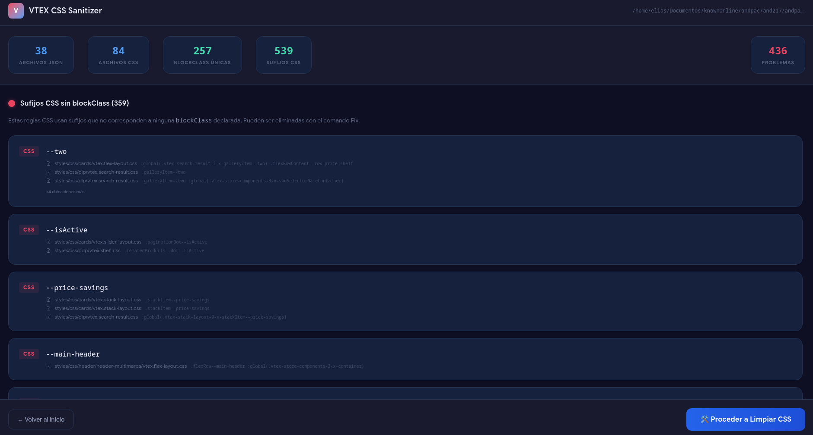

Un ecosistema de herramientas diseñadas para acelerar tu desarrollo, optimizar tu código y simplificar tus despliegues.
Generador visual drag & drop para construir estructuras de bloques VTEX IO y exportarlas como JSONC.
Ver detalles →Limpia y optimiza las hojas de estilo encontrando clases CSS huérfanas y blockClass sin uso.
Ver detalles →Automatiza los procesos de despliegue, publicación y actualización de versiones de custom apps.
Ver detalles →Crea layouts visualmente y exporta el código con el Landing Generator.
Limpia tu CSS y asegura la calidad del código con el Sanitizer.
Sube tus cambios a producción de forma segura con el Deploy Helper.
Olvídate de escribir JSONC a mano. Construye tus landings de VTEX IO arrastrando y soltando componentes nativos en un canvas visual.
Soporta flex-layout, responsive-layout, rich-text, imágenes y más. Configura las props interactivamente y copia el código listo para tu store-theme.
Mantén tu proyecto limpio y performante. Analiza tu código para encontrar CSS huérfano y declaraciones blockClass sin uso real.
Disponible como herramienta de CLI para integrar en flujos continuos o como aplicación de escritorio con interfaz gráfica intuitiva.
npm install -g vtex-css-sanitizer-cli

Una interfaz de línea de comandos diseñada para quitarle la fricción al proceso de publicación de nuevas custom apps y releases del store-theme.
Ejecuta de forma unificada patch releases, major releases (con migración de site-editor) y facilita la publicación de aplicaciones VTEX.
npm install -g vtex-deploy-helper
Tres herramientas, un objetivo. Todas de código abierto, sin costos y listas para usar.